4.4 Monochrome
Engine: a true single-hue duotone — the source image is first desaturated then converted to luminance (Rec.709), a tone curve is applied to it, and this grayscale luminance is then recolorized with ONE single hue/saturation (not a multi-point gradient table: a 5-control-point design was considered then dropped in favor of this simpler mechanism, judged sufficient). The colorized result is finally blended with pure gray according to a colorization "Strength".
Thumbnails
| Thumbnail | Effect |
|---|---|
| Neutral | No transformation. |
| Red | Brick/terracotta duotone (hue ≈3°). |
| Sepia | Classic brown/sepia duotone (hue ≈42°), the most iconic of the group. |
| Yellow | Olive-yellow duotone (hue ≈55°). |
| Green | Sage/olive-green duotone, the least saturated of the group (hue ≈108°). |
| Blue | Deep blue duotone, clearly the most saturated of the group (hue ≈223°). |
| Purple | Mauve-purple duotone (hue ≈275°). |
The 6 presets share the same template — full desaturation of the source (100% gray base), 70% colorization strength, a slight contrast boost, light grain — and differ only by the hue and saturation of the coloring.
Manual settings
Strength
- Strength (
intensity, 0..1) — blends the result with the original image (0 = no effect).
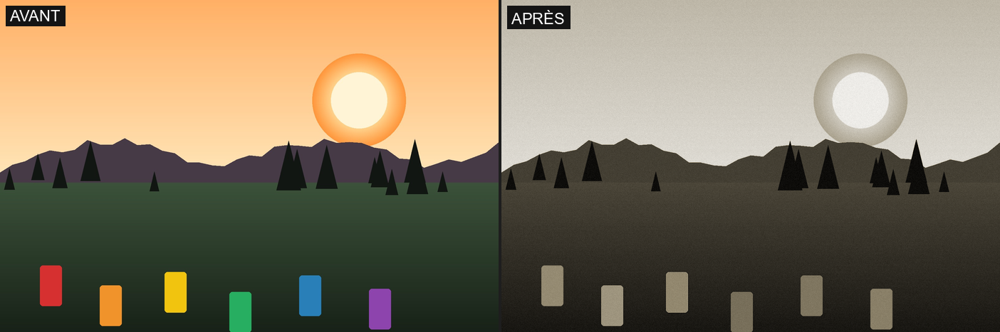
- Colorization strength (
force, 0..100) — proportion of color blended onto the gray base: at 0, the image stays pure grayscale; at 100, the colorization is fully applied.
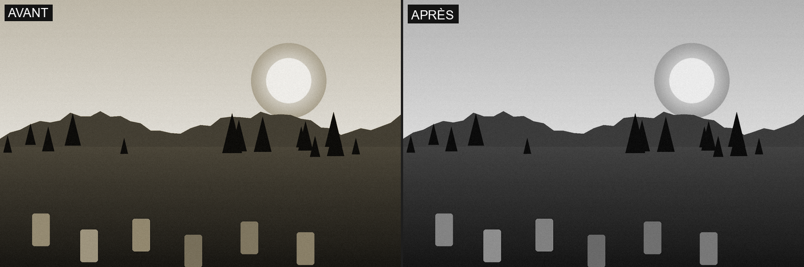
Tone
- Contrast (
contrast, -100..100).
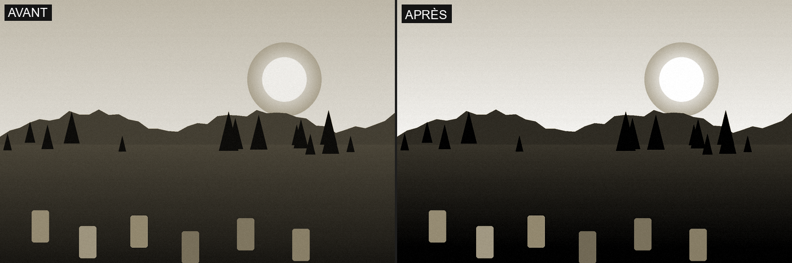
- Shadows (
shadows, -100..100).
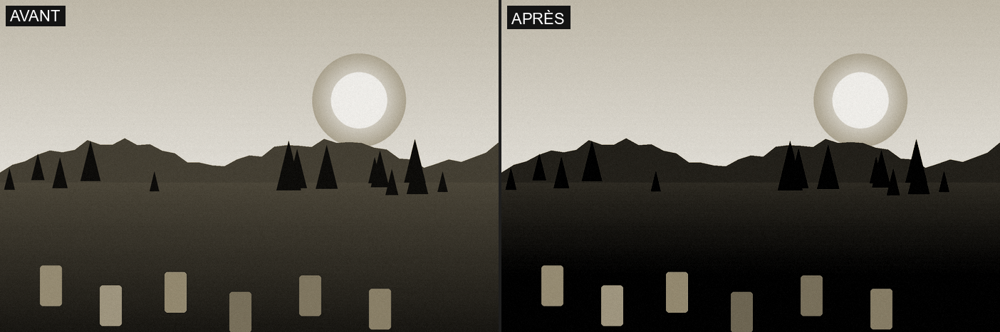
- Highlights (
highlights, -100..100).
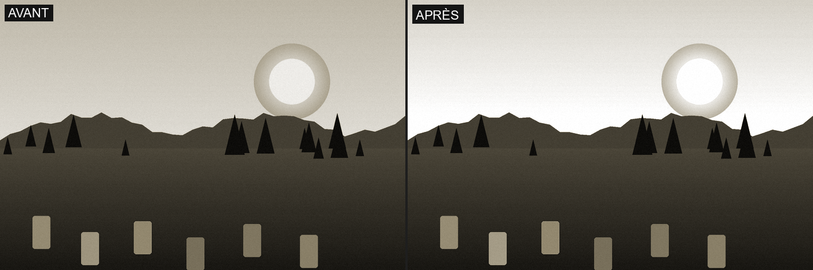
- Black point (
black_point, 0..0.10) — black point clipping, applied last.
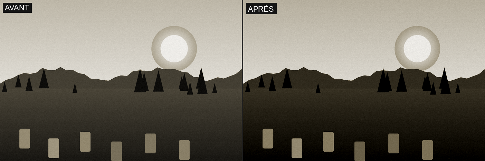
Colour
- Colorization hue (
hue, 0..360°) — the duotone's color itself; also adjustable via a dedicated color wheel in addition to the numeric slider.
- Tint saturation (
tint_saturation, 0..100) — intensity of the colorization.
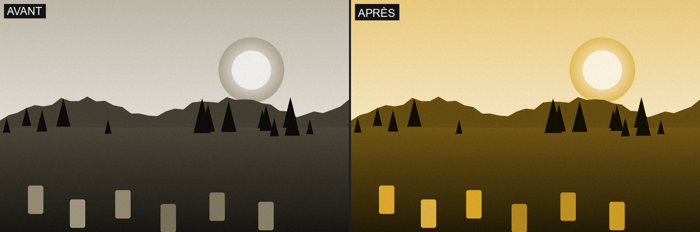
- Original saturation (
original_saturation, ×0..2) — how much of the source photo's color is re-injected before the luminance extraction: at 0 (default for every preset), a pure duotone; beyond that, the original color shows through beneath the colorization.
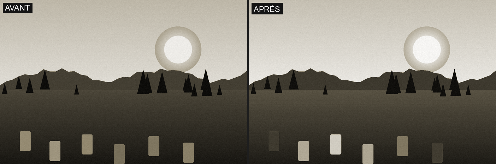
- Apparent temperature (
temperature_shift, -1000..1000) — a warm/cool toning applied after the colorization.
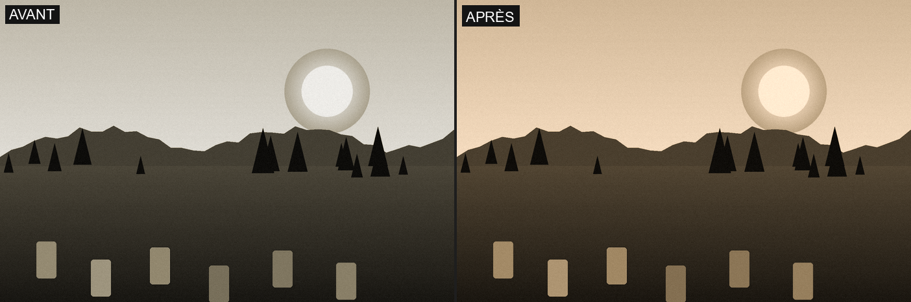
- Green–magenta tint (
tint_magenta, -20..20).
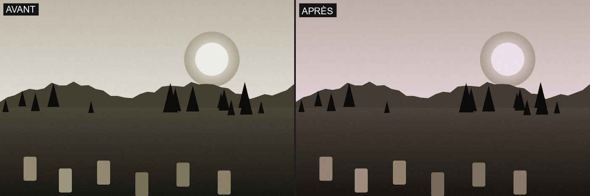
Texture & Grain
- Clarity (
clarity, -100..100).
- Sharpness (
sharpness, -100..100).
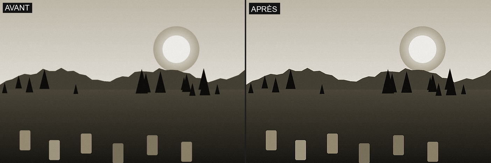
- Grain (
grain, 0..0.05).
- Vignetting (
vignette, -100..100) — radial darkening (negative) or brightening (positive) of the edges, specific to this row (distinct from the Vignetting row, §4.7).
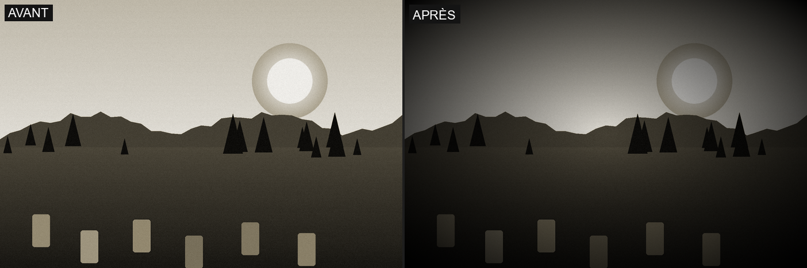